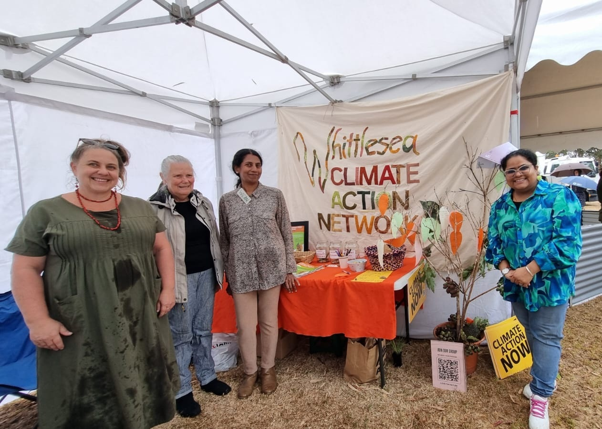

Get involved
There are many ways to support WCAN.
Get involved
There are many ways to support the WCAN. Whether you have time to volunteer, would like to become a member or are able to make a financial contribution, every form of support helps strengthen our work and impact.
You don’t need to be a climate expert to get involved, just have an interest in making a positive difference and meeting like-minded individuals in your community.
Whether you can contribute regularly or just from time to time, your involvement will help create a more connected and climate resilient City of Whittlesea.
Choose how you’d like to get involved
Volunteer
Share your time, skills and enthusiasm by helping with events, projects, community engagement or behind-the-scenes support.
Donate
Help us deliver community outreach, educational activities and local climate initiatives through a financial contribution.
Join
Become a member and be part of a welcoming network of local people working together for positive climate action.
Volunteer with WCAN
If you have a few hours each month or want to assist with a specific project or event, your time and skills can make a real difference.
There are many ways to volunteer with WCAN, including:
- assisting at community events and workshops
- participating in clean-up days and tree planting activities
- supporting community education and awareness programs
- helping with communications, social media or administration
- supporting partnerships with local organisations and community group
- contributing professional skills such as project management, sustainability education, communications, design or technology.
You don’t need previous experience in climate action, and we welcome people of all ages, backgrounds and understandings.
Volunteering with WCAN is an opportunity to:
- connect with people who care about the community
- develop new skills and share your experiences with climate change
- contribute to practical local projects
- help build a more resilient and sustainable City of Whittlesea.
Interested in volunteering?
Contact us to find out about current volunteer opportunities or come along to one of our meetings or community events to meet the team.

Donate to WCAN
As a community-led group, WCAN uses support from our community to continue delivering local climate action.
Your donation helps us:
- deliver community workshops and educational activities
- support planting, clean-up events and other practical projects
- develop resources that strengthen community resilience
- build partnerships with local organisations
- expand opportunities for community participation.
Every donation, large or small, contributes to creating a healthier, more climate-conscious City of Whittlesea.
Donate and support local climate action
If you would like to make a donation, please contact us for more information. Every contribution helps us continue our work across the City of City of Whittlesea.

Join WCAN
Becoming a member is a great way to stay connected and help directly shape local climate action in City of Whittlesea.
As a WCAN member, you’ll become part of a network committed to building a more resilient, connected and sustainable community.
Members have opportunities to:
- attend regular meetings and community events
- contribute ideas and help shape local initiatives
- participate in working groups and projects
- connect with others who share interest in sustainability and resilience
- assist with numerous activities, events and opportunities.
WCAN values shared leadership and inclusive participation. Members are always encouraged to contribute in ways that suit their interests, experience and availability.
Whether you’re taking the early steps into climate action or have years of experience, your perspective is welcome.
Want to become a member?
Join WCAN today and help build practical, community-led solutions for a stronger and more resilient City of Whittlesea. Contact us for more information.

Not sure where to start?
Tell us what you’re interested in, or share your views to help shape our work.